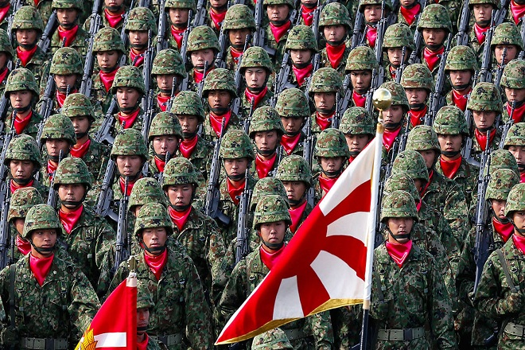

1.UNITED STATES ARMY

The United States Armed Forces are the military forces of the United States. It consists of the Army, Marine Corps, Navy, Air Force, Space Force, and Coast Guard.The president of the United States is the commander-in-chief of the Armed Forces ..
In what shouldn’t be a surprise, the U.S. “retains its top spot as the undisputed military power in the world,” Global Firepower says
America has more air units than any other country on Earth, with 2,085 fighters, 967 attack helicopters, 945 transports and 742 special mission aircraft.
The U.S. also leads the world with 39,253 armored vehicles, 91 Navy destroyers, and 20 aircraft carriers. It has an estimated 1,400,000 active personnel.
Washington has allocated $750 billion to the U.S. military budget in 2020.
2.RUSSIAN ARMY

The Armed Forces of the Russian Federation commonly known as the Russian Armed Forces, are the military forces of Russia, established after the dissolution of the Soviet Union.
Russia, whose military has become involved in Syria and Ukraine in recent years, has the most tanks of any country in the world: 12,950, more than double what the U.S. has, according to Global Firepower’s statistics.
Its estimated 1,013,628 active personnel, on land, are in charge of commanding 27,038 armored vehicles, 6,083 units of self-propelled artillery and 3,860 rocket projectors.
In the skies, Russia’s air force has 873 fighter aircraft and 531 attack helicopters. In water, they have 62 submarines and 48 mine warfare ships.
Russia is estimated to spend $48 billion on its military this year.
3.CHINESE ARMY

The PLA consists of five professional service branches: the Ground Force, Navy, Air Force, Rocket Force, and the Strategic Support Force. Units around the country are assigned to one of five theater commands by geographical location.
China, the most powerful country in Asia and a growing adversary to the U.S., ranks third on this list.
The communist superpower has an estimated active personnel of 2,183,000 – the largest in the world.
China has been building out its Navy in recent years while engaging in territorial disputes across the South China Sea. Today, they have 74 submarines, 52 frigates and 36 destroyers, Global Firepower says.
On land, China has 33,000 armored vehicles and 3,500 tanks. Their Air Force has amassed 1,232 fighter aircraft and 281 attack helicopters.
China is estimated to spend $237 billion on its armed forces in 2020.
4.INDIAN ARMY
The Indian Army is the land-based branch and the largest component of the Indian Armed Forces. The President of India is the Supreme Commander of the Indian Army, and its professional head is the Chief of Army Staff (COAS), who is a four-star general.
The Indian Army originated from the armies of the East India Company, which eventually became the British Indian Army, and the armies of the princely states, which were merged into the national army after independence.
Global Firepower says the developing nation is amongst the world’s leaders in the number of tanks (4,292), towed artillery (4,060) and fighter aircraft (538).
The primary mission of the Indian Army is to ensure national security and national unity, to defend the nation from external aggression and internal threats, and to maintain peace and security within its borders.
India is estimated to spend $61 billion on its military in 2020.
5.JAPANESE ARMY

The Imperial Japanese Army ( "Army of the Greater Japanese Empire") was the official ground-based armed force of the Empire of Japan from 1868 to 1945. It was controlled by the Imperial Japanese Army General Staff Office and the Ministry of the Army, both of which were nominally subordinate to the Emperor of Japan as supreme commander of the army and the Imperial Japanese Navy.
Japan has 152 special mission aircraft – more than any country in the world other than the U.S., according to Global Firepower’s statistics – and a formidable Navy fleet that contains 40 destroyers.
With an estimated active military personnel of 247,160, this Asian country only has a fraction of the headcount that volatile neighbor North Korea has, but makes up for it with its updated weaponry.
It also has 3,130 armored vehicles, 1,004 tanks and 119 attack helicopters.
Japan is estimated to spend $49 billion on its military in 2020.